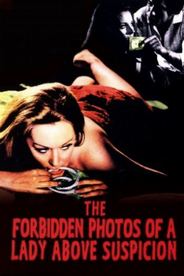
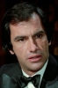

Also known as:Le foto proibite di una signora per bene (original title)
Country:Italy, 93 minutes
Spoken languages:Italian
Genres:Mystery, Thriller, Crime, Horror
Director(s):Luciano Ercoli
Writer(s):Ernesto Gastaldi, Mahnahén Velasco
Video Codec:Unknown
Number: 2605


Certification:
Storyline:
The wife of a financially struggling businessman is blackmailed by a mysterious man into having a sadistic relationship with him, or he will release damning evidence that suggests that her husband is a murderer.
Cast: 

Medium: Bluray,
Comments: Part of: Giallo Essentials - Blue
Loaned: No
Aspect ratio: Unknown